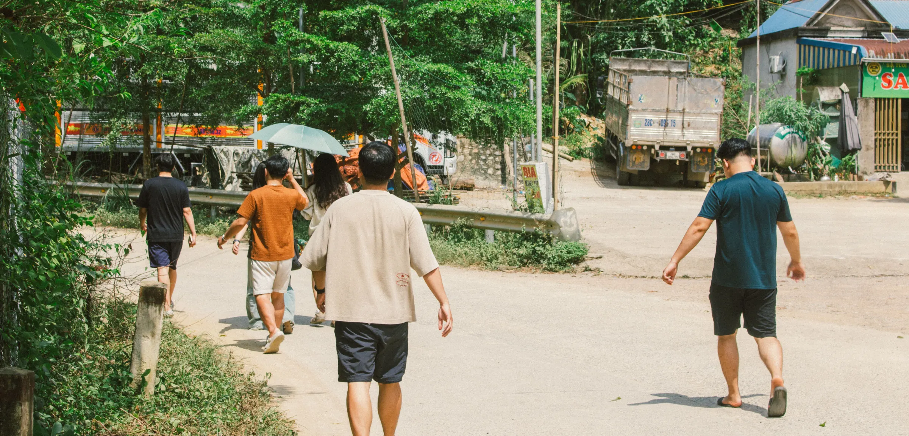
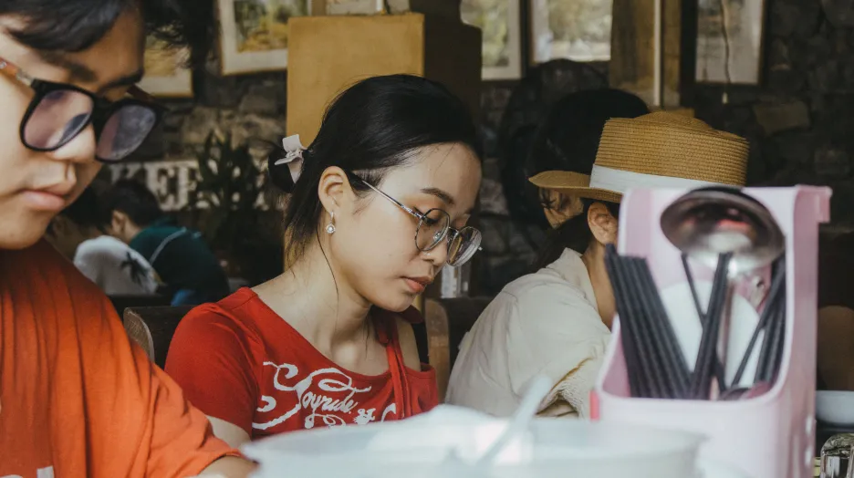

Visual focus
[ Xây dựng cho ]
Founded by Khac Mingg Nguyen, a Patreon and Discord group dedicated to UI/UX designers, we embody a spirit of sharing and mutual learning. Operating for 6 years, we have hosted many special events.

Mingg Patreon
Established in 2020
A community connecting event
for Vietnamese designers.
In the most peaceful way.
Mingg Patreon was foundedby Khac Minh Nguyen (Mingg).as a place to share what he knows about UI/UX design with anyone eager to learn.
Over time,the group grew into a close-knit community, one that now reaches well beyond design.

[ Xây dựng cho ]
Founded by Khac Mingg Nguyen, a Patreon and Discord group dedicated to UI/UX designers, we embody a spirit of sharing and mutual learning. Operating for 6 years, we have hosted many special events.
[ Xây dựng cho ]
Founded by Khac Mingg Nguyen, a Patreon and Discord group dedicated to UI/UX designers, we embody a spirit of sharing and mutual learning. Operating for 6 years, we have hosted many special events.

We do not only stop at roles around UI/UX design; we believe design has a common root.
